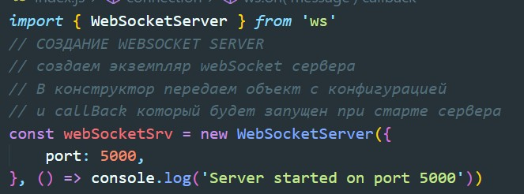
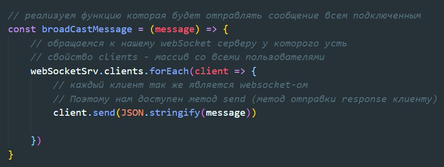
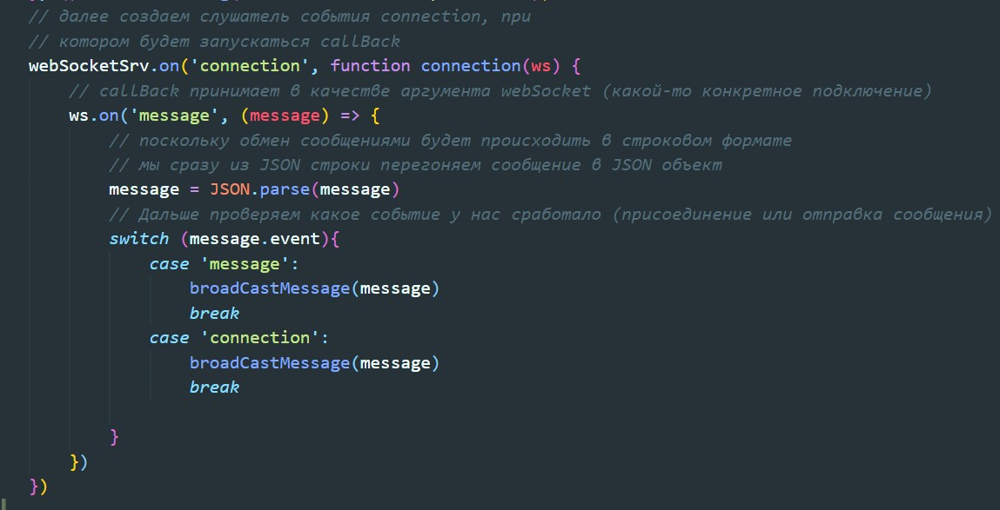
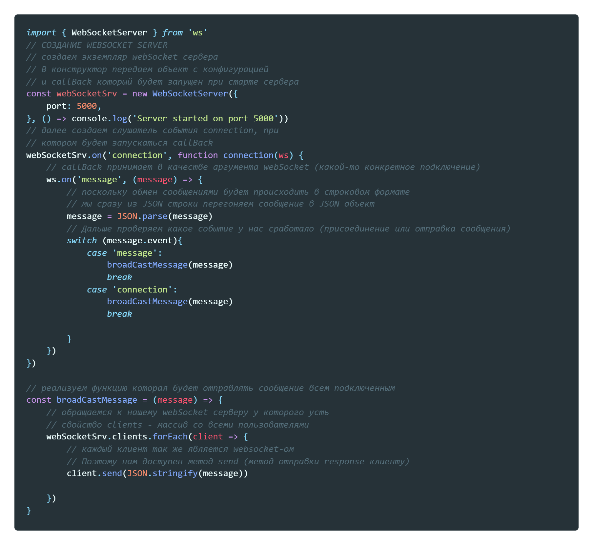

WebSocket - это самый мощный способ организовать RealTime взаимодействие между клиентом и сервером. Здесь уже используется особый протокол - Web sockets. Здесь устанавливается постоянное соединение между клиентом и сервером и обмен данными может происходить в двухстороннем режиме. Мы как с клиента отправляем данные на сервер, так и с сервера можем эти данные отправлять на клиент. Поскольку это самый мощный способ организации ReatTime, он более ресурсоемкий, на телефонах быстрее садится аккамулятор. Потребуется определенных знаний и поднятия WebSocket сервера.
Инициализация проекта
npm init -yУстановка необходимых зависимостей
npm i ws nodemonЗдесь уже будет несколько другая структура
После того как подняли сервер создадим функцию которая будет рассылкать всем подключившимся сообщения
Здесь обязательно сообщение переводим в JSON
Далее на наш WebSocket вешаем вечный слушатель на событие 'connection'
Касательно проверки switch - здесь это применено в качестве примера, что бы показать, что мы можем от клиента принимать разные event
В целом файл сервера будет выглядеть так:
